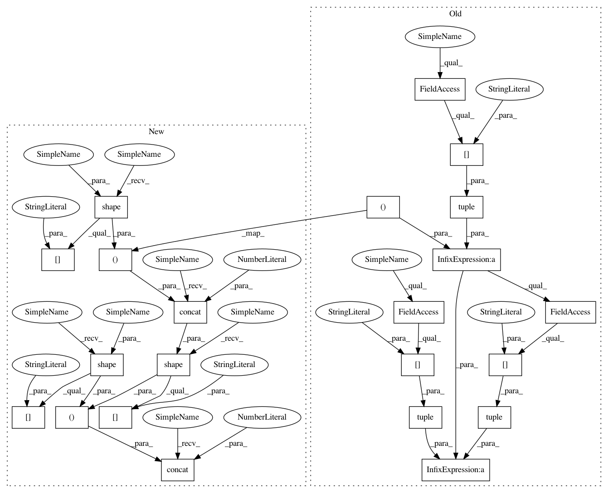

b5453ae0c6700e0d9e12de02876f6a07c58b45ec,kymatio/scattering1d/frontend/tensorflow_frontend.py,ScatteringTensorFlow1D,scattering,#ScatteringTensorFlow1D#Any#,23
Before Change
"out_type="list" for equivalent functionality.",
DeprecationWarning)
batch_shape = tuple(x.shape[:-1])
signal_shape = tuple(x.shape[-1:])
x = tf.reshape(x, (-1, 1) + signal_shape)
// get the arguments before calling the scattering
// treat the arguments
if self.vectorize:
size_scattering = precompute_size_scattering(
self.J, self.Q, max_order=self.max_order, detail=True)
else:
size_scattering = 0
S = scattering1d(x, self.backend.pad, self.backend.unpad, self.backend, self.J, self.psi1_f, self.psi2_f,
self.phi_f, max_order=self.max_order, average=self.average, pad_left=self.pad_left,
pad_right=self.pad_right, ind_start=self.ind_start, ind_end=self.ind_end,
oversampling=self.oversampling,
vectorize=self.vectorize,
size_scattering=size_scattering,
out_type=self.out_type)
if self.out_type == "array" and self.vectorize:
scattering_shape = tuple(S.shape[-2:])
new_shape = batch_shape + scattering_shape
S = tf.reshape(S, new_shape)
elif self.out_type == "array" and not self.vectorize:
for k, v in S.items():
After Change
"out_type="list" for equivalent functionality.",
DeprecationWarning)
batch_shape = tf.shape(x)[:-1]
signal_shape = tf.shape(x)[-1:]
x = tf.reshape(x, tf.concat(((-1, 1), signal_shape), 0))
// get the arguments before calling the scattering
// treat the arguments
if self.vectorize:
size_scattering = precompute_size_scattering(
self.J, self.Q, max_order=self.max_order, detail=True)
else:
size_scattering = 0
S = scattering1d(x, self.backend.pad, self.backend.unpad, self.backend, self.J, self.psi1_f, self.psi2_f,
self.phi_f, max_order=self.max_order, average=self.average, pad_left=self.pad_left,
pad_right=self.pad_right, ind_start=self.ind_start, ind_end=self.ind_end,
oversampling=self.oversampling,
vectorize=self.vectorize,
size_scattering=size_scattering,
out_type=self.out_type)
if self.out_type == "array" and self.vectorize:
scattering_shape = tf.shape(S)[-2:]
new_shape = tf.concat((batch_shape, scattering_shape), 0)
S = tf.reshape(S, new_shape)
elif self.out_type == "array" and not self.vectorize:
for k, v in S.items():
In pattern: SUPERPATTERN
Frequency: 3
Non-data size: 22
Instances
Project Name: kymatio/kymatio
Commit Name: b5453ae0c6700e0d9e12de02876f6a07c58b45ec
Time: 2020-02-18
Author: epnevmatikakis@gmail.com
File Name: kymatio/scattering1d/frontend/tensorflow_frontend.py
Class Name: ScatteringTensorFlow1D
Method Name: scattering
Project Name: kymatio/kymatio
Commit Name: 0a3be9613457da5efeaa88fc198c8f01666425df
Time: 2020-02-18
Author: janden@flatironinstitute.org
File Name: kymatio/scattering3d/frontend/tensorflow_frontend.py
Class Name: HarmonicScatteringTensorFlow3D
Method Name: scattering
Project Name: kymatio/kymatio
Commit Name: b5453ae0c6700e0d9e12de02876f6a07c58b45ec
Time: 2020-02-18
Author: epnevmatikakis@gmail.com
File Name: kymatio/scattering1d/frontend/tensorflow_frontend.py
Class Name: ScatteringTensorFlow1D
Method Name: scattering
Project Name: kymatio/kymatio
Commit Name: 094d40234092f583f55b1d025b9424d2a1b20b43
Time: 2020-02-18
Author: janden@flatironinstitute.org
File Name: kymatio/scattering2d/frontend/tensorflow_frontend.py
Class Name: ScatteringTensorFlow2D
Method Name: scattering